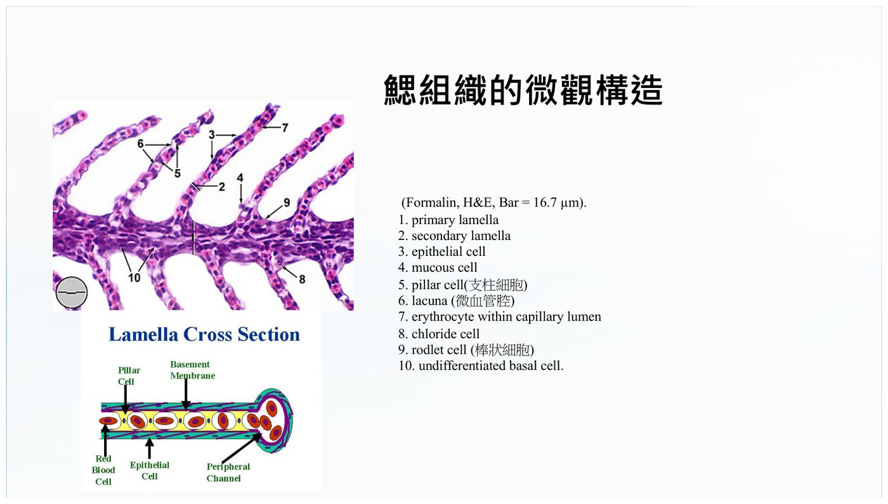

大方向與重點摘要
- 這章在講什麼
- 魚的解剖生理是之後所有疾病的底層：鰓（呼吸、離子、酸鹼、排氨）、鰾（浮力）、皮膚與黏液（第一道防線）、腎與脾（免疫與排泄）、滲透壓調節（淡水魚與海水魚相反）。兩份講義文字很簡略，這頁在每節把講義寫了什麼、講義沒寫但臨床上該懂什麼分開放（黃框「讀書補充Note」預設收起）。
- 為什麼重要
- 鰓是水質問題最先受傷的器官（第一週的氨氮、亞硝酸鹽、H2S 都經鰓進入）；鰓、皮膚、黏液是病原進入的門戶；滲透壓失調是許多魚病的死因；鰾與腎、脾的變化是剖檢時的線索。
- 這章要抓的重點
-
- 鰓：氣體交換在鰓小片，血流與水流逆流（講義：逆流約 80%、順流約 50% 的氧交換效率，上 p.40）；鰓蓋怒張、浮頭的原因要會鑑別（上 p.46–47）。
- 鰾：調節浮力；氣體腺靠乳酸＋Bohr／Root 效應充氣，卵圓窗放氣（上 p.50–51）。
- 皮膚與黏液：黏液＝物理屏障＋免疫（抗體、溶菌酶、補體）＋清潔；立鱗病是講義標「***」的重點（上 p.67）。
- 滲透壓：海水魚喝水、排鹽；淡水魚不喝水、一直排尿、吸收離子；鯊魚存尿素＋TMAO（下 p.40–46）。
- 肝、脾、腎：肝脂肪代謝、黃肝；脾腫大的原因（講義選擇題「不包括環境溫度過高」）；腎排泄與離子平衡。
- 循環：單循環、四腔室順序（靜脈竇 → 心房 → 心室 → 動脈球／動脈圓錐）。
- 容易混淆
- Bohr 與 Root：講義 p.51 兩者寫法幾乎一樣，這頁分開寫並標差異。淡水魚與海水魚：喝水、尿量、氯細胞方向都相反。鰓絲與鰓小片：講義選擇題答「鰓絲」，實際氣體交換在鰓絲上的鰓小片。軟骨魚鰓流向：講義 p.44 說「順水流」，與一般教科書不同，見「講義核對」。
- 考試可能怎麼問
（推測） - 逆流交換的原理與效率；鰓的結構與功能；軟骨魚與硬骨魚鰓、滲透壓比較；Bohr／Root；鰾充氣機制；黏液的功能；趨性種類；免疫器官（腎、脾）。學長姐整理的 2023 助教預告有趨性、軟硬骨魚氧氣利用、Bohr／Root、免疫器官（回憶，非官方，見考古頁，待建）。國考（獸醫傳染病學）沒有直接考魚類生理，但很多魚病題以「鰓、鰾、浮頭」為載體，見「國考關聯」。
講義（兩份都沒署名，文字簡短且有些段落是通用說明、與一般教科書不完全一致）與整理者補充分開標示：正文是講義內容；黃框「讀書補充Note」與標「補充」的段落是依一般魚病學教科書與文獻補上的專業說明，講義沒寫；與講義矛盾處集中在「講義核對」一節並標「待核對」。頁碼寫「上 p.N」＝《生理學P2》、「下 p.N」＝《skeletal-system》。講義圖片可公開（使用者已確認）。
魚類定義、分類與基本構造 Classification
講義這一段偏通識：魚的定義、主要類群、各類群的代表特徵。養殖與臨床上的魚幾乎都是輻鰭魚綱硬骨魚，之後的鰓、鰾、滲透壓都以硬骨魚為預設。
定義與主要特徵理解
- 廣義：所有具有鰓且生活在水中、沒有帶趾四肢的有頭動物；主要特徵＝鰓（水中呼吸）、鰭（游泳）、鱗片、適應水中的形態；包含軟骨魚（鯊、魟）與硬骨魚（鮭、金魚）（上 p.3）。講義選擇題：不是魚類主要特徵的是「具有四肢」（答 B，上 p.4）。
- 文昌魚：脊索動物但沒有真正脊椎、脊索貫穿全身、濾食性（上 p.5）。
- 外部形態：頭、軀幹、尾；內部器官有腦、心臟、鰓、肝、腎、腸、生殖器官（上 p.17）；選擇題答「頭部、軀幹和尾部」（上 p.18）。
五大類群比較必考
| 類群 | 特徵（講義上 p.6、p.8–14、p.16） |
|---|---|
| 盲鰻亞綱（Myxini） | 最原始脊索動物之一；全身黏液腺、可迅速分泌大量黏液防禦（黏液球可堵住捕食者的鰓）；沒有真正眼睛、脊椎與顎；腐食性、海洋清道夫；會打結清除黏液（p.13–14）。選擇題：以「腐食性」為主（答 C，p.7） |
| 七鰓鰻亞綱 | 無顎類圓口綱；圓形吸盤口器與角質齒；幼體濾食、成體寄生或半寄生；溯河洄游；部分成體不進食、繁殖後死亡（p.11） |
| 軟骨魚綱 | 鯊、魟、銀鮫；骨骼完全為軟骨；盾鱗；腸道有螺旋瓣（增加消化吸收面積）；內部受精；卵生（卵莢）、卵胎生、胎生都有（p.8–9） |
| 肉鰭魚總綱 | 現存肺魚與腔棘魚；鰭基部有肌肉與骨骼，是四肢雛形；有肺或鰭囊等輔助呼吸構造，與四足動物演化最接近（p.10） |
| 輻鰭魚總綱 | 占所有魚種 95% 以上；鰭由骨質鰭條呈放射狀支撐；鰓蓋與鰾調節呼吸與浮力；水產養殖主要對象（p.6、p.16） |
p.12 講到魚蛭（體外寄生蟲，附著於體表、鰓或口腔吸血）：症狀為食慾不振、體重下降、活動力降低；防治分物理（移到乾淨水中並清除）、化學（「使用藥物」，講義沒寫藥名、途徑與劑量）、生物（天敵）。其餘如大西洋睡鯊壽命（上 p.30）、海鰻形態與偽裝（上 p.22–23）屬趣味背景，不逐項整理。
讀書補充Note - 為什麼臨床只需要先抓「硬骨魚」？
補充：依一般教科書／文獻（講義沒寫）
- 臺灣養殖與觀賞魚（吳郭魚、虱目魚、石斑、鯉科、鱸、鰻、鮭鱒、金魚錦鯉）幾乎都屬輻鰭魚綱的硬骨魚（teleosts）；所以考試與臨床問的「鰓怎麼流、有沒有鰾、怎麼調節滲透壓」，預設都是硬骨魚。
- 軟骨魚（鯊、魟）與硬骨魚在滲透壓策略（尿素＋TMAO vs. 淡水魚／海水魚各自策略）、鰓構造（鰓裂直接開口 vs. 鰓蓋覆蓋）與浮力（肝油 vs. 鰾）都不同，這就是考試愛問「軟骨魚與硬骨魚比較」的原因。
- 寫比較題時先講「類群」再講「機制」，不要把鯊魚的特徵套到養殖魚上。
運動、游泳方式與趨性 Locomotion & Taxis
講義考點：三種游泳方式（鰻行、鱒行、鮪行）與五種趨性。
鰭與運動理解
- 魚主要靠鰭運動：胸鰭用於平衡與轉彎、背鰭與臀鰭穩定身體、尾鰭推進；也靠身體彎曲產生推進力；特殊方式如鰻蠕動、海馬背鰭擺動、飛魚胸鰭滑翔（上 p.19）。
- 下 p.1：硬骨魚類進化程度愈高，腹鰭的位置愈位於體的前部。
三種游泳方式必考
| 方式 | 怎麼游（講義上 p.20、p.27、p.29） | 例子與特徵 |
|---|---|---|
| 鰻行式 | 身體蠕動游泳（選擇題答案「通過身體的蠕動」，p.21）；狹窄環境靈活、省能量 | 鰻魚、水蛇；講義 p.27 寫尾鰭圓形、擺動幅度大、游速慢 |
| 鱒行式 | 身體擺動＋尾鰭推進；最常見、效率高、可快速移動 | 鱒魚、鱸魚、鯡魚；尾鰭截形；被掠食者靈活轉彎加速（p.29） |
| 鮪行式 | 尾鰭高速擺動、身體幾乎不動；高速但耗能大 | 鮪、鯖、馬林魚；尾鰭新月形；身體流線型、肌肉強大；掠食者（p.29） |
講義判別法（p.27）：身體擺動幅度大 → 鰻行、鱒行；擺動小 → 鮪行；尾鰭新月形 → 鮪行、截形 → 鱒行、圓形 → 鰻行；速度快 → 鮪行。
魚類的趨性必考
| 趨性 | 內容（講義上 p.24–26） |
|---|---|
| 趨光性 | 對光的反應；正趨光性游向光源（選擇題答案，p.25），負趨光性迴避；例：表層魚夜間聚集在漁船燈下（燈光誘魚） |
| 趨流性 | 對水流方向與強度的反應；正趨流性逆流而上（鮭鱒逆流回出生地產卵）、負趨流性順流而下（幼體擴散）；受流速、水溫、食物分布、繁殖需求影響（p.26） |
| 趨溫性 | 變溫動物主動尋找最適溫度區間；講義舉例冷水性（鱒、鮭）偏好 10–18℃、溫水性（鯉、鯰）可適應 20–30℃；影響地理分布、季節遷徙、垂直分層 |
| 趨鹽性 | 廣鹽性（鮭、鱸）可在淡水與海水間遷移、狹鹽性只能在特定鹽度；涉及滲透壓調節（鰓離子交換、腎功能調整） |
| 趨化性 | 對水中化學物質的反應，靠嗅覺與味覺；覓食、逃避捕食者、找配偶、鮭魚以嗅覺辨認出生河流氣味；同類受傷釋放警戒素讓同類逃離 |
讀書補充Note - 游泳與趨性在養殖現場的意思
補充：依一般魚病學概念（講義沒寫）
- 行為是最早的臨床徵象：魚病診斷第一步看游泳與分布（講義 p.48 也強調觀察行為）。正常游泳型態改變（打轉、側游、沉底、浮頭、靠近入水口或水車）常早於死亡出現；浮頭與靠水車見第一週低 DO 的臨床表現。
- 趨性可解釋聚集行為：負趨光性魚在強光池會躲到暗處；趨溫性使魚在溫度分層的池或箱網裡集中在適溫層，溫度突變時才會浮頭或挨擠。這是「趨溫性」與第一週水溫、DO 連動的臨床意義。
- 趨化性相關：魚能感知水中毒物／氨氮，會出現竄游、逃避行為（第一週氨氮臨床表現含「竄游」）。
鰓與呼吸 Gills & Respiration
這一節是考古的核心：鰓的結構、逆流交換、軟骨魚與硬骨魚的比較、鰓蓋怒張與浮頭的鑑別。
呼吸器官與鰓的三大功能必考
- 呼吸器官：鰓（主要）；輔助呼吸器官（迷器、樹狀結構、肺、腸等，使魚在缺氧或乾燥時存活）；皮膚呼吸（小型魚較常見）（上 p.31）。講義選擇題：鰓進行的主要生理過程是氣體交換（B，p.32）。
- 鰓的功能（p.33）：① 氣體交換（吸氧、排 CO2）、② 離子調節（氯細胞 chloride cells 吸收或排出離子）、③ 酸鹼調節（排出酸性或鹼性物質）。
鰓的構造：鰓弓、鰓絲、鰓小片必考
| 構造 | 講義內容（上 p.36） |
|---|---|
| 鰓弓 | 支持鰓絲的骨骼結構，每個鰓弓上有兩排鰓絲 |
| 鰓絲 | 氣體交換的主要場所，每個鰓絲上有許多鰓小片，增加面積 |
| 鰓小片 | 鰓絲上的微小結構，血管豐富、與水進行氣體交換，進一步增加面積 |
講義 p.34 填空題「鰓中負責氣體交換的結構是什麼？」答鰓絲；p.36 正文卻說氣體交換在鰓絲上的鰓小片進行，細節見黃框與「講義核對」。

硬骨魚怎麼讓水流過鰓理解
| 方式 | 內容（上 p.35、p.37） |
|---|---|
| 鰓蓋活動（主動） | 鰓蓋打開時水從口流入、關閉時水由鰓裂流出；呼吸運動分吸水（張口、擴大鰓腔）與壓水（閉口、收縮鰓腔壓水過鰓）兩步，鰓蓋協調 |
| 胸鰭活動（輔助） | 小型魚較常見 |
| 快速游泳（被動） | 水從口進、經鰓流出；大型魚較常見 |
氣體交換與逆流交換必考
- 氧氣吸收需要血液與水之間的氧氣濃度梯度（選擇題答 C，上 p.39）；CO2 也依濃度梯度排入水中（p.38）。
- 逆流交換（counter-current exchange）：血液與水以相反方向流過鰓，使濃度梯度維持在較高水準，氧交換效率約 80%；順流交換（同向）只有約 50%，在魚類中較少見（上 p.38、p.40）。
讀書補充Note - 逆流交換為什麼比較有效？鰓的構造與鰓病的關聯
補充：依一般魚病學／魚類生理教科書（講義沒寫細節；數字 50%、80% 為講義說法）
1. 為什麼逆流比較好
- 水沿鰓小片流向與鰓小片內血流方向相反。血液一路走向入水端的過程中，沿途每一點的水氧分壓都高於該點血液的氧分壓，所以整段鰓小片都在吸氧。
- 若血與水同向，兩者分壓會很快趨近平衡，後半段不再交換，理論上血液氧分壓最多追到與水的混合平衡點（約一半），所以講義寫順流約 50%。
- 臨床意義：逆流效率高，但依賴鰓小片完整、水流不中斷。鰓小片增生、融合、黏液過多、寄生蟲覆蓋，都會降低有效交換面積，即使水中 DO 正常，魚也會缺氧（與第一週的亞硝酸鹽「水裡有氧、血液不能攜氧」是兩條不同的缺氧路徑）。
2. 鰓的構造要這樣記
- 硬骨魚一側通常有 4 個鰓弓；每個鰓弓有兩排鰓絲（初級鰓板 primary lamellae）；鰓絲兩側整齊排列鰓小片（次級鰓板 secondary lamellae），氣體交換主要在鰓小片：由扁平上皮（pavement cells）與柱細胞（pillar cells）構成薄的血水屏障。講義 p.34 答「鰓絲」只是較粗略的答案，考試如問「負責氣體交換的最小構造」寫鰓小片更精確。
- 氯細胞（MRC）一般分布於鰓絲上皮與鰓小片基部（講義 p.41、p.42 只說在鰓上皮，實際位置因魚種與環境鹽度而異，待核對）；氯細胞增生會增厚鰓上皮、拉長擴散距離（補充，待核對）。
3. 與鰓病、水質的關聯
- 鰓是水質與病原最先接觸的器官：氨氮、亞硝酸鹽、低 pH、化學藥劑、寄生蟲、細菌與黴菌都先傷鰓。常見病理變化是鰓小片上皮增生與融合（國考 101-1 第 73 題：細菌性鰓病主要病變＝鰓薄板增生、融合）。
- 後果＝有效交換面積下降 + 離子與酸鹼調節失衡 + 氨排出受阻（鰓同時是多數硬骨魚排氨的主要部位），所以水質不好與鰓病會互相惡化。
軟骨魚與硬骨魚：鰓構造與氣體交換方式必考
| 項目 | 硬骨魚 | 軟骨魚 |
|---|---|---|
| 鰓蓋（p.43） | 有，保護鰓並協調呼吸運動 | 沒有，鰓裂直接暴露在水中 |
| 鰓弓 | 通常具骨質 | 軟骨構成 |
| 假鰓（p.43） | — | 講義：一些軟骨魚有假鰓，退化、「沒有氣體交換功能」，功能不明 |
| 交換方式（講義上 p.44） | 逆水流效應（效率高） | 講義寫順水流效應，效率較低但可節省能量、活動量小；整體效率低於硬骨魚 |
講義上 p.40 說順流交換「在魚類中較少見」，p.44 又說軟骨魚用順水流效應。一般教科書指出軟骨魚（板鰓類）的鰓同樣是逆流交換，差異在鰓蓋（板鰓類由鰓間隔與鰓裂構成、無鰓蓋）與換水方式。考試若問「軟骨魚與硬骨魚氣體交換比較」，建議先問老師或對照上課筆記再決定答案；整理者不確定老師的標準答案，故兩種說法都保留。
迷器與其他輔助呼吸理解
- 迷器（labyrinth organ）：輔助呼吸器官，血管豐富、可從空氣取氧；常見於攀鱸科；使魚能在缺氧的沼澤、池塘、稻田生存；由鰓弓上的骨骼與上皮組織形成，多褶皺（上 p.42）。
- 輔助呼吸還包含鰾（肺魚明顯，上 p.49）與肺魚的肺（下 p.12）。
鰓蓋怒張與浮頭的原因必考
| 現象 | 原因（講義上 p.46–47） |
|---|---|
| 鰓蓋怒張（鰓蓋張開） | ① 鰓部疾病（細菌、寄生蟲、真菌）；② 水質惡化（氨氮、亞硝酸鹽超標、pH 異常）；③ 中毒（農藥、重金屬、工業廢水）——都影響鰓功能、造成呼吸困難 |
| 浮頭 | ① 缺氧（水質惡化、藻類大量繁殖、氣溫升高）；② 鰓部疾病；③ 鰾功能異常（感染、損傷、先天畸形） |
講義 p.48 的臨床思路：觀察行為（游泳、食慾、活動力、體色、外觀）→ 判斷原因（水質、飼料、疾病、環境）→ 及時處理（隔離病魚、改善水質、調整飼料與用藥）。與第一週「先測水、先救環境」互相呼應。
鰾與浮力 Swim Bladder, Bohr & Root
鰾＝調節浮力的充氣囊。重點是氣體腺怎麼把氧氣充進去，以及Bohr 與 Root 的差別（講義寫得簡略，這頁分開寫）。
鰾的功能與結構必考
| 項目 | 講義內容（上 p.49–50） |
|---|---|
| 功能 | ① 調節密度（浮力），充氣或放氣改變浮力、使魚在水中保持平衡並省能量；② 呼吸（部分魚，肺魚明顯）；③ 感知（感知水中震動與聲音，傳到內耳） |
| 鰾壁 | 外層結構，結締組織與肌肉，控制氣體進出 |
| 氣體腺（gas gland） | 位於鰾壁，向鰾中充氣；血管豐富、特殊細胞，把血中氣體釋放到鰾裡 |
| 卵圓窗（oval） | 位於鰾壁，從鰾中釋放氣體；有括約肌控制 |
氣體腺充氣機制與 Bohr、Root必考
| 項目 | 講義上 p.51 的寫法 | 補充：依一般教科書的標準定義（講義沒寫） |
|---|---|---|
| Bohr 效應 | 血液中 CO2 濃度升高，導致血紅蛋白對氧的親和力降低；促進氧從血液釋放到氣體腺 | CO2 升高（pH 下降，即 H+ 增加）使氧合曲線右移，Hb 對氧親和力下降（P50 上升），但在高氧分壓下 Hb 仍可飽和；曲線形狀由 S 形右移 |
| Root 效應 | 血液中 pH 降低，導致血紅蛋白對氧的親和力降低；促進氧釋放到氣體腺 | 在酸性（H+ 高）下，Hb 攜氧容量下降：曲線不再能飽和（講義圖中藍線的平台降低），即使氧分壓很高，Hb 也無法再結合氧；為許多硬骨魚特有，是鰾與眼脈絡膜奇網能把氧濃縮到極高分壓的關鍵 |
| 乳酸的產生 | 氣體腺產生乳酸，降低周圍 pH，促進氧從血中釋出；需要消耗能量 | 氣體腺細胞以無氧糖解把葡萄糖代謝成乳酸與 CO2，酸化流入的血液，觸發 Bohr + Root，使血氧被擠出進入鰾 |
講義的 Bohr（CO2 升高 → 親和力降低）與 Root（pH 降低 → 親和力降低）幾乎是同一件事，沒有寫出Root 效應的關鍵＝「攜氧容量／飽和度下降」。學長姐回憶 2023 助教預告考 Bohr／Root，但該年題目沒出現（見魚病製作指引），所以答案寫法以老師上課為準。建議答題時寫：Bohr＝親和力下降（曲線右移）；Root＝連最大攜氧量都下降（曲線平台下降），兩者都由 CO2／H+ 增加引起。
讀書補充Note - 氣體腺怎麼把氧「擠」進鰾？奇網與逆流濃縮
補充：依一般魚類生理教科書（講義沒寫；細節待核對）
- 血液經動脈進入奇網（rete mirabile）：密集平行的動、靜脈毛細血管，血流方向相反。
- 氣體腺細胞以無氧糖解產生乳酸與 CO2，使局部血液酸化。
- 酸化後的血液因 Bohr 與 Root 效應把氧擠出血紅蛋白（Root 使 Hb 連飽和量都下降），血中氧分壓大增；此外乳酸、CO2 也降低氣體在血中的溶解度（鹽析效應 salting-out）。
- 奇網的逆流倍增機制把這些高分壓氣體留在鰾附近、不被血流帶走，氣體因此能擴散進鰾，使鰾內氣壓可以高於周圍水壓（深水魚尤其如此）。
臨床關聯
深海魚、鯊魚的浮力策略理解
- 深海魚（上 p.52）：許多缺乏鰾（深海充放氣耗能大）、儲存大量脂肪（密度低於水）、骨骼輕量化（缺鈣質）。
- 鯊魚（上 p.58）：沒有鰾，靠巨大肝臟的油脂（可占體重 25% 以上，富含角鯊烯，密度低於水）調節浮力，並可儲存能量。
鰾疾病：腫大、診斷、治療必考
| 項目 | 講義內容（上 p.53、p.55–56） |
|---|---|
| 鰾腫大原因 | 感染（細菌、病毒、寄生蟲引起鰾炎、氣體積聚）；損傷（外力撞擊或手術操作不當引起出血與氣體積聚） |
| 診斷 | 觀察症狀（浮頭、沉底、游泳不穩、食慾不振）→ X 光（形態與大小，看腫大、感染、損傷）→ 超音波（內部結構，看腫瘤或積液） |
| 治療 | 藥物：適用細菌、病毒、寄生蟲引起者，常用抗生素、抗病毒藥、驅蟲藥，依疾病類型與嚴重程度選擇藥物與劑量；手術：適用鰾腫大與損傷（抽取、修復損傷、矯正畸形），具風險 |
講義沒有寫具體藥名、給藥途徑（口服混飼、藥浴或注射）與劑量；實務上要依魚種、病因與水產用藥法規與休藥期決定，這頁不補劑量。
皮膚、鱗與黏液 Skin, Scales & Mucus
皮膚與黏液是魚的第一道防線，也是病原的入口。立鱗病與體表潰爛是這一節的臨床重點。
皮膚的功能與結構必考
| 項目 | 講義內容（上 p.59–63） |
|---|---|
| 三大功能 | 保護（擋細菌、病毒、寄生蟲與紫外線；選擇題答「防止入侵細菌和病毒」B，p.60）、感覺（震動、溫度、壓力、化學物質）、呼吸（小型魚較常見）；另有排泄與滲透調節（皮膚氯細胞，p.63） |
| 表皮 | 最外層、多層上皮細胞；缺乏角質層、保持濕潤、便於氣體交換；分泌黏液、減少阻力 |
| 真皮 | 表皮下、結締組織（選擇題答 B，p.62）；含血管、神經與感覺器官；儲存色素、決定體色 |
| 鱗片 | 骨質或角質，保護身體 |
鱗的種類理解
| 種類 | 講義內容（上 p.64） |
|---|---|
| 骨鱗 | 硬骨魚最常見，骨質；分圓鱗與櫛鱗；提供保護並減少阻力 |
| 硬鱗 | 厚重堅硬、多層骨質，保護更強；古代魚類較常見 |
| 盾鱗 | 牙齒狀結構，軟骨魚常見；減少阻力；排列影響游速 |
| 「鰭頸鱗」 | 講義寫為鯊魚與鰩特有、外形似牙齒、由牙本質與琺瑯質構成。此描述與盾鱗相同，名稱「鰭頸鱗」疑為誤植（待核對） |
黏液在防禦中的角色必考
立鱗病（講義標「***」）必考
| 項目 | 講義內容（上 p.67） |
|---|---|
| 症狀 | 魚鱗豎起、體表腫脹、食慾不振、活動力降低；嚴重可致死；通常由細菌感染引起 |
| 診斷 | 主要看症狀；魚鱗豎起、體表腫脹可初步判斷；要確定病原可做細菌培養與藥物敏感性試驗 |
| 防治 | 改善水質、使用抗生素（講義沒寫藥名、途徑、劑量）、加強營養提升免疫 |
讀書補充Note - 立鱗病的機轉、與水質和滲透壓的關係、用藥注意
補充：依一般魚病學教科書（講義沒寫，細節待核對）
- 怎麼形成：鱗片是靠真皮的鱗囊固定；當體液滯留（水腫）或鱗囊積液使真皮腫脹，鱗片被頂起、呈「松果狀」（pinecone）。它是徵象，不是單一病名；常伴隨腹水（腹部膨大）、凸眼，代表全身性水腫／敗血症或體液與電解質調節失衡。
- 病因：講義寫細菌（常見為氣單胞菌屬 Aeromonas 一類）；一般資料另指出病毒或其他全身性疾病也會造成立鱗與腹水（病因待核對）。所以做細菌培養與藥敏很重要。
- 與滲透壓的關聯：淡水魚本來要持續排出大量水分（見滲透壓一節）；皮膚、鰓或腎受損時排水與離子調節失靈，水分滯留，就容易出現水腫與立鱗。
- 用藥原則（補充）：抗生素依藥敏結果與法規選用；病魚多已不吃，口服混飼效果有限，臨床常用藥浴或注射（途徑依魚種、規模而定）；食用魚必須遵守休藥期。劑量與休藥期各國規定不同，不憑記憶寫。
體表潰爛：原因與預防理解
| 原因（講義上 p.73） | 講義列的常見病原 |
|---|---|
| 細菌 | 嗜水氣單胞菌（Aeromonas hydrophila）、柱狀屈撓桿菌（Flexibacter／Flavobacterium columnare） |
| 真菌 | 水黴菌、絲狀菌 |
| 寄生蟲 | 魚虱、指環蟲 |
預防（上 p.74）：改善水質（保持清潔、定期換水）→ 控制密度 → 加強營養（均衡飼料，可添加免疫增強劑，講義沒寫品名）。呼應第一週：水質先處理。
心臟與血液循環 Heart & Circulation
記住單循環：血液從心臟打到鰓、再到全身，回心前只經過一次心臟。
單循環與心臟腔室必考
- 魚類採單一循環路徑；心臟由四個依序排列的腔室組成：靜脈竇 → 心房 → 心室 → 動脈球（或動脈圓錐）（選擇題答 A，下 p.6–7）。血液只經過心臟一次；心臟泵出缺氧血到鰓氧合，再送全身（下 p.6、p.8–9）。
- 心臟在頭後方腹腔前端、靠近鰓；約占體重 0.2%–0.3%；紅血球有細胞核且較大（下 p.6）。單循環較省能量，但限制代謝率與活動力。
- 瓣膜：竇房之間、房室之間、動脈球內都有瓣膜（p.8）。
硬骨魚與軟骨魚的差異必考
| 腔室／構造 | 硬骨魚 | 軟骨魚（如鯊魚） |
|---|---|---|
| 出流道（下 p.8、p.10） | 動脈球（Bulbus arteriosus）：彈性壁、緩衝心搏、降低脈衝壓力，維持血流穩定 | 動脈圓錐（Conus arteriosus）：肌性、含多層瓣膜，調節血壓、提高循環效率 |
| 靜脈竇／心房 | 收集靜脈血 → 薄壁彈性的心房 | 靜脈竇相對較大、心房肌肉較發達（p.10） |
| 心室 | 壁厚、泵血主力；高速游泳魚（如鮪）心室肌肉更發達（p.6、p.10） | 同左 |
肺魚與恆溫適應看過
- 肺魚（下 p.11–12）：講義寫有兩個心房、兩個心室，構造較近兩棲類；有原始肺與鰓，可在缺氧水域生存，乾旱時挖泥休眠並分泌黏液繭；僅分布於非洲、南美、澳洲三個屬。
- 部分魚類的區域性恆溫（下 p.14）：鮪、旗魚、鯊等大型掠食魚有奇網（rete mirabile），以逆流熱交換保留肌肉產熱，體溫可比周圍水溫高約 5–10 度。
讀書補充Note - 單循環的臨床意義：鰓阻力、血壓與水腫
補充：依一般魚類生理教科書（講義沒寫）
- 血液先過鰓、再進全身：心室打出的血先經鰓小片的微血管再到體循環，所以體循環血壓比哺乳類低，鰓血管阻力是重要的心臟負荷。鰓病造成鰓小片增生、堵塞時，既影響交換、也增加心臟負擔。
- 動脈球的緩衝：硬骨魚的彈性動脈球把脈動變成較平穩的血流，保護鰓小片這種薄壁血管；這是它在硬骨魚的意義（講義：緩衝心搏、降低脈衝壓力）。
- 剖檢與診斷：心臟位置靠近鰓、鰓蓋後；剖檢時紅血球有核、血液顏色與哺乳類不同；慢性鰓、腎或循環問題可見心包或腹腔積液（腹水），與立鱗病同屬體液滯留的表現（病因待核對）。
- 講義說肺魚「兩心房兩心室」是簡化說法；一般資料描述為部分分隔的心房與心室（演化上的過渡構造），待核對。
感覺器官：耳、側線、嗅、味、眼 Sensory Organs
下半份講義用整頁文字與圖列出魚的感覺器官；多為背景知識，臨床上最常用到的是眼（凸眼）與側線（行為判讀）。
| 器官 | 講義內容（下 p.15–25） |
|---|---|
| 耳（p.15） | 內耳，兼具聽覺與平衡，沒有外耳或耳道；半規管三個（平衡、偵測三維運動）、耳石（碳酸鈣，使毛細胞彎曲偵測聲音）、魏氏小骨（把鰾的聲波傳到內耳；鯉、鯰可聽到高達 13,000 Hz）、鰾作為聲波放大器；鯊魚無鰾，主要偵測 1,000 Hz 以下低頻聲音 |
| 側線（p.17） | 特有感覺系統，偵測水流、壓力變化、振動；充滿液體的管道與感應毛細胞，「遠距離觸覺」；黑暗、濁水中導航、偵測捕食者與獵物、群游避免碰撞；講義寫可反應最遠約 100 公尺外的微小水流擾動 |
| 嗅覺（p.18） | 每側一對嗅囊（嗅板增加感應面積）；與呼吸系統分開；偵測極低濃度化學物質，辨識食物、天敵、同類與繁殖對象；鮭魚辨認出生河流氣味 |
| 味覺（p.19） | 分布全身多個部位（選擇題答 B，p.20）：口唇與口腔味蕾、鬚與觸鬚（如鯰魚）、體表與鰭（如鯉科）；與嗅覺合作，在混濁或黑暗環境比視覺更重要 |
| 眼（p.21–24） | 大部分魚近視（焦距約 2–3 m；水折射率 1.33 vs 空氣 1.0）；沒有眼瞼，由堅硬透明角膜保護、靠水流清潔；視網膜後有反光層（tapetum lucidum）；淺水魚對約 500 nm 藍綠光最敏感、深海魚偏 475–480 nm；多數硬骨魚三色視覺（如虹鱒 455、530、625 nm）；鯊魚與許多深海魚有瞬膜；眼的位置與捕食習性相關（上位眼＝底棲掠食、前向眼＝主動獵食、側向眼＝群游） |
| 凸眼（p.25） | 圖示金魚等凸眼病例；講義寫「鏈球菌造成滲透壓調節出問題」 |
| 魚類年齡（p.16） | 只有圖，沒有文字：耳石（otolith）切面與年輪（annulus）；圖中標示第 1、2 年輪與耳石核心 |
讀書補充Note - 凸眼的鑑別診斷，與「魏氏小骨」的名詞
補充：依一般魚病學教科書（講義沒寫；機轉待核對）
- 凸眼（exophthalmia）是徵象，常見原因：全身性細菌感染／敗血症（如鏈球菌、氣單胞菌；國考 102-2 有「出血性敗血症及凸眼症」題）、氣泡病（gas bubble disease）、眼球後積液、局部外傷。要和立鱗病、腹水一起看，判斷是不是全身性水腫。講義說「鏈球菌造成滲透壓調節出問題」是把機轉簡化，是否唯一機轉未核對。
- 魏氏小骨（Weberian ossicles）：講義寫「只存在於鰭脂類魚類（如鯉魚、鯰魚）」，一般說法為骨鰾總目（Ostariophysi，包括鯉形目、鯰形目等）才有，「鰭脂類」疑為翻譯錯誤（待核對）。
- 耳石與鱗片年輪常用於推估年齡（講義只給圖，細節補充）。
肝、脾、腎與消化道 Liver, Spleen, Kidney & Digestion
剖檢最常看的幾個器官：肝（黃肝、脂肪肝）、脾（腫大）、腎、消化道（含腸道免疫）。
肝臟必考
- 魚最大的內部器官之一，紅褐色、位於體腔前部；脂溶性維生素（A、D、K）儲存、蛋白質合成、主要脂質儲存器官，飲食失衡可致脂肪肝（下 p.27、p.31）。
- 五大功能（p.28）：脂肪代謝、解毒、蛋白質合成（血漿蛋白、酵素）、能量儲存、色素代謝。選擇題：不包括「呼吸作用」（答 C，p.29）。
- 黃肝（p.30）：肝色黃或黃褐，原因＝脂肪代謝異常（攝取過量脂肪或碳水化合物致脂肪堆積）、毒素（重金屬、農藥、藻毒素）、營養不良（缺維生素 E與抗氧化物）、病原感染；是肝功能受損的指標，預防靠改善水質、調整飲食、控制密度。
脾臟必考
| 項目 | 講義內容（下 p.33–36） |
|---|---|
| 功能 | ① 免疫（偵測並對抗病原，釋放免疫細胞與抗體）；② 血液儲備（需要時釋放紅血球，增加血容量）；③ 血小板產生；④ 過濾（老化細胞、細菌、異物）；⑤ 儲存能量 |
| 脾腫大原因（p.35） | ① 病原體感染（嗜水氣單胞菌、病毒、寄生蟲）；② 水質不良（氨氮高、溶氧低）；③ 營養失衡（缺維生素 C、E 或礦物質；脂肪肝也與脾腫大有關）；④ 遺傳或腫瘤性疾病 |
講義選擇題（p.36）「脾腫大的主要原因不包括」答C 環境溫度過高：我對照正文 p.35 的四大原因（病原、水質不良、營養失衡、遺傳／腫瘤），正文沒有列溫度，答案與正文一致；但溫度升高會透過第一週的水質（低氧、NH3 比例上升）間接造成壓力，所以這題是「正文沒列」而不是「臨床上完全無關」。
腎臟必考
- 講義（下 p.38–39）：① 排泄廢物（氮廢物）；② 電解質平衡（鈉、鉀、鈣、氯）；③ 濃縮尿液以節省水分（講義寫法）；④ 體溫調節（講義寫法）；⑤ 酸鹼平衡。
- 講義內部矛盾：p.38–39 寫腎臟「濃縮尿液、節省水分」，但 p.43（淡水魚）寫「魚就不需要喝水，只需要不斷排尿」。淡水魚排的是大量稀釋尿，海水魚才少尿，見滲透壓一節；講義「體溫調節」一項也不是一般教科書的腎臟主要功能，待核對。
讀書補充Note - 魚的腎與脾是「免疫器官」：頭腎、體腎、脾，和骨髓的對應
補充：依一般魚類免疫學教科書（講義沒寫；之後「魚類免疫」頁會再展開）
- 硬骨魚沒有骨髓與淋巴結。造血與主要的淋巴器官是頭腎（head kidney，前腎）與脾臟；胸腺負責 T 細胞成熟。
- 頭腎：造血、B 細胞與抗體產生場所之一，並含間腎組織（interrenal，分泌皮質醇）與鉻親和組織（chromaffin，分泌兒茶酚胺），是魚的壓力內分泌核心；這就是講義 p.77 圖「Stress：Brain–Hypothalamus–Pituitary–Interrenal（cortisol）／Chromaffin（catecholamine）」的位置。體腎（後腎）主要負責排泄與滲透調節。
- 脾臟：血液過濾、抗原補捉與免疫反應，含黑色素巨噬細胞中心（melano-macrophage centres）。
- 剖檢意義：腎、脾腫大或出血是細菌與病毒敗血症常見變化，也和講義說「脾腫大是免疫反應」一致。學長姐回憶 2023 助教講「腎臟＝memory 所在」，回憶、非官方，待核對。
消化道理解
滲透壓調節與氯細胞 Osmoregulation & Chloride Cells
考古年年有的一題：淡水魚、海水魚、軟骨魚的滲透壓策略與氯細胞。講義的描述分散在 p.40–46，下面整理成一張表。
淡水魚與海水魚相反必考
| 項目 | 海水魚（講義下 p.40–41） | 淡水魚（下 p.41、p.43） |
|---|---|---|
| 體液與環境 | 細胞內液濃度小於海水 | 細胞內液濃度大於外界 |
| 水分 | 會脫水 → 必須喝水（「不喝水就會渴死」） | 水會滲入 → 不需喝水、不斷排尿（不能儲存太多水以免膨脹） |
| 氯細胞作用 | 排出過多離子（Na+、Cl-、K+），吸收少量水 | 吸收環境中稀少的離子，並排出過多水分 |
| 尿 | 講義有圖示「等滲尿（少量）」 | 講義有圖示「低滲尿（多量）」 |
氯細胞（富含粒線體細胞，MRC）必考
- 分布在鰓上皮；含大量 Na+-K+-ATPase（NKA）（主動運輸離子的能量依賴酶）、特殊離子通道與共輸送蛋白。海水魚主動排出 Na+、Cl-、K+；淡水魚主要吸收離子（下 p.41、p.44）。
- 別名：acidophilic cells、ionocytes、mitochondrial-rich cells（MRC）；也參與碳酸氫鹽（HCO3-）運輸與酸鹼平衡（p.44）。數量與活性隨環境鹽度調整，是洄游魚能在淡水與海水間轉換的關鍵；可用測 NKA 活性評估離子調節能力（p.42）。
- 鰓上皮四種細胞（p.42）：平鋪細胞（約占鰓絲表面 90%，氣體交換）、氯細胞（MRC）、黏液細胞（保護層、減少水流磨損）、未分化細胞（幹細胞，修復鰓損傷）。
- p.45（日本鰻的實驗圖）：環境鹽度越高，MRC 數量越多，淡水下 MRC 頂端開口小而平（吸收離子，與 NKA 相關），海水下開口大且凹陷（分泌離子，與 CFTR 氯離子通道相關）。污染物與酸化也會影響 MRC（p.44）。
講義 p.44 一句寫「氯細胞主要是吸收水中的離子以維持魚體內離子濃度」，與 p.41 海水魚「排出離子」並列，是在講淡水魚的情況；p.44 後文有分開寫海水、淡水。
軟骨魚（鯊魚）的尿素策略必考
- 血液儲存高濃度尿素（350–400 mM），是硬骨魚的 100 倍以上，使血液滲透壓與海水相近、避免脫水（下 p.46）。
- TMAO（三甲胺氧化物）保護組織蛋白質免受高濃度尿素的變性作用（選擇題答 C，p.47）。
- 特化腎臟結構重吸收尿素而不排出；部分鯊魚可進入河口或淡水區域。
讀書補充Note - 滲透壓三種策略總表：講義寫了哪些、沒寫哪些
補充：依一般魚類生理教科書（講義沒寫的部分；細節待核對）
| 淡水硬骨魚 | 海水硬骨魚 | 板鰓類（鯊、魟） | |
|---|---|---|---|
| 體液滲透壓 vs. 環境 | 高於水（高張） | 低於海水（低張） | 約等於或略高於海水（尿素＋TMAO） |
| 水分流動方向 | 水經鰓與皮膚滲入 | 水經鰓與皮膚流失 | 幾乎無淨流失 |
| 喝水 | 基本不喝 | 大量喝海水，腸吸收水與離子 | 少量 |
| 尿 | 大量稀釋尿 | 少量、含 Mg2+、SO4 2- 等二價離子 | 少量；腎重吸收尿素 |
| 排鹽／吸鹽 | 鰓氯細胞主動吸收 Na+、Cl- | 鰓氯細胞主動排出 Na+、Cl-（NKA、共輸送蛋白、CFTR） | 多餘鹽由直腸腺排出 |
- 臨床意義：緊迫、鰓或皮膚受損、水質惡化時，離子與水的調節失靈，淡水魚容易水腫、立鱗，海水魚容易脫水。淡水魚處理時常會在水中加鹽減輕滲透負擔，物種耐鹽度不同，劑量與時間講義沒寫，這頁不補。
- 第一週關聯：亞硝酸鹽經鰓以氯細胞的離子吸收途徑進入，因此提高水中 Cl- 能競爭降低毒性（見養殖與水質頁）。
- 板鰓類的直腸腺排鹽與血中高濃度尿素是一般教科書的標準內容，講義只寫了尿素與 TMAO。
肌肉、體色、壓力與生殖 Muscle, Color, Stress & Reproduction
肌肉理解
- 肌纖維片狀排列（選擇題答 B，上 p.69），每一小段肌節不到數公分，使魚靈活運動；肌肉分紅肌（多肌紅蛋白、有氧代謝、持久）與白肌（無氧代謝、爆發力）；結締組織脆弱（膠原蛋白中強化結構的胺基酸較牛肉少，講義寫法）（p.68）。
- 血合肉：顏色較深的肌肉，位於側面與尾部，含肌紅蛋白與血紅蛋白、有氧代謝；分布與游泳能力有關（填空答「游泳能力」，p.71），游泳能力強的魚含量較高；味道濃、口感較粗（p.70）。
- 電鰻放電（p.72）：放電細胞（特殊肌肉細胞）＋離子通道（神經控制開閉）→ 大量放電細胞同時放電可產生高壓電。
體色與壓力理解
- 體色變黑（上 p.75–76）：應激反應（水質惡化、環境變化、捕撈）、疾病（講義舉「黑死病、爛鰓病」，影響色素細胞）、環境因素（光照不足、水溫過低）。
- 蝦紅素（astaxanthin，p.78）：使魚呈鮮紅色，沉積於皮膚、肌肉、卵巢；有抗氧化與免疫增強作用（講義寫法；用量與給藥方式講義沒寫）。
- 魚背深、魚腹淺（p.79）：保護色；背黑色素細胞多、腹白色素細胞多。講義第二點「適應光線」的描述前後矛盾（淺色魚腹反射更多光反而更容易被發現），不採用，待核對。
- p.77 沒有文字，只有壓力圖：Stress → 腦－下視丘－腦下垂體 → 間腎組織（皮質醇）與鉻親和組織（兒茶酚胺） → 一級反應 → 二級反應（免疫、細胞離子、代謝營養、循環呼吸等）；這是「魚類免疫」頁的起點。
生殖與生殖隔閡看過
國考關聯與講義核對 Exam Links & Fact-check
我在「國考專區」的獸醫傳染病學考科（100–115 年）搜尋鰓、鰾、浮頭、滲透壓、氯細胞、Bohr、黏液、立鱗等關鍵字：沒有直接考魚類生理（滲透壓、氯細胞、Bohr、逆流交換）的題目，魚類相關題幾乎都是疾病各論（病原鑑別）。下面七題用「鰓、鰾、浮頭」當題幹線索，和這一章最有關；病原的詳細機轉屬疾病各論，講義尚未提供，解析的原因為補充（依一般教科書與題目敘述）。
國考關聯題（含官方答案）理解
| 題目（年別、題號） | 題幹關鍵字 | 官方答案與逐項說明（補充） |
|---|---|---|
| 101-2 第 61 題；106-1 第 74 題（同題） | 水質不良淡水養殖場、浮頭、爛尾、鰓蓋打開有病變、滑走性長桿菌、內臟分離不到 | C：柱狀病菌（Flexibacter／Flavobacterium columnare）。滑走性（gliding）長桿菌、鰓與體表（鰓、尾鰭）病變、內臟分離不到＝局部／體表感染。A 非典型 Aeromonas salmonicida 多見於冷水魚皮膚潰瘍；B Pseudomonas anguillarum 是 Vibrio anguillarum 的舊名，弧菌症（短彎桿，多為海水魚）；D Aeromonas hydrophila 是運動性（非滑走）桿菌，常造成敗血症與體表潰爛 |
| 106-2 第 77 題 | 浮頭、鰓顏色紅白雜陳、鍍銀染色可見二級鰓薄板中黑色絲狀物 | B：Branchiomyces spp.（鰓黴菌）。鰓黴菌的菌絲侵入鰓小片血管，鰓呈紅白相間（大理石狀）壞死，鍍銀染色（如 GMS）菌絲呈黑色。A Saprolegnia、D Achlya 是水黴，多在體表、卵呈棉絮狀；C Dermocystidium 為囊胞狀，鰓與皮膚的囊腫為主（待核對） |
| 101-1 第 73 題 | 細菌性鰓病的主要病變 | C：鰓薄板增生、融合。這正對應本章「鰓小片是氣體交換面積」的概念：增生融合 → 面積下降 → 缺氧、浮頭。A 鰓絲壞死缺損較像鰓黴菌或柱狀病的壞死性病變；B 敗血症是全身性；D 體表糜爛潰瘍是皮膚病變（皆補充，待核對） |
| 109-1 第 72 題 | 錦鯉天氣轉熱浮頭呼吸困難、鰓有白色結節、內臟正常 | A：Myxobolus koi（黏液孢子蟲，鰓寄生形成孢囊結節）。B Mycobacterium、C Nocardia 多形成內臟（及體表）白色結節，題目內臟正常；D Glugea plecoglossi 是香魚的微孢子蟲（對應第一週病例 H 的「內臟白點」），與錦鯉鰓不符 |
| 104-2 第 69 題 | 鰻魚攝食減少、鰾部見蟲體 | D：Anguillicola sp.（鰻鰾線蟲）。A Anisakis（異尖線蟲）幼蟲見於海水魚、生食可感染人，成蟲寄生在海洋哺乳類，不是鰻鰾線蟲；B 水蛭（leech）吸血於體表或鰓；C 棘頭蟲（acanthocephalans）寄生在腸道 |
| 101-1 第 69 題 | 鰻魚鰾線蟲的中間宿主 | A：橈腳類（copepods）。線蟲幼蟲在橈腳類體內發育；B 螺類是吸蟲類的中間宿主；C 水蛭是某些血液寄生蟲的媒介；D 大肚魚並非此線蟲的中間宿主（是否為轉續宿主待核對） |
以上為官方答案（國考專區 試卷 md）；逐項說明的「原因」為整理者依題目敘述與一般教科書補充，不是官方詳解。更多魚病題（病毒、細菌、寄生蟲、蝦病）等疾病各論講義進來後再整理成完整詳解與自我測驗。
講義核對：與一般教科書不同處（待核對清單）必考
| 講義說法 | 一般教科書／內部矛盾 | 建議 |
|---|---|---|
| 上 p.51：Bohr＝CO2 升高 → 親和力降低；Root＝pH 降低 → 親和力降低 | Root 的關鍵是攜氧容量（飽和度）下降，不只是親和力；兩者重疊 | 答題兩者分開寫；以老師上課為準 |
| 上 p.44：軟骨魚用順水流氣體交換 | 與上 p.40「順流在魚類中較少見」矛盾；一般教科書：板鰓類也是逆流 | 問老師 |
| 上 p.34：負責氣體交換的是鰓絲 | 正文 p.36 與一般教科書：鰓小片是氣體交換的主要場所 | 考試寫「鰓絲上的鰓小片」 |
| 上 p.43：假鰓沒有氣體交換功能 | 一般教科書的硬骨魚假鰓與眼部血流有關；軟骨魚假鰓的功能有不同說法 | 待核對 |
| 下 p.38：腎臟濃縮尿液節省水分；腎臟參與體溫調節 | 淡水魚排大量稀釋尿（下 p.43 也寫淡水魚「不斷排尿」）；腎不是體溫調節器官 | 以滲透壓一節為準 |
| 下 p.15：魏氏小骨只存在「鰭脂類」魚類 | 應為骨鰾總目（Ostariophysi）（鯉、鯰等） | 翻譯疑誤 |
| 上 p.64：「鰭頸鱗」為鯊魚特有、牙本質與琺瑯質 | 描述與盾鱗相同 | 名稱疑誤 |
| 上 p.79：淺色魚腹「在黑暗水底更容易被發現」 | 內容前後矛盾 | 不採用，僅記保護色（背深腹淺） |
| 下 p.11：肺魚兩心房兩心室 | 多為部分分隔的過渡構造 | 簡化說法 |
| 下 p.36 脾腫大「不包括環境溫度過高」 | 與正文四大原因一致 | 答案 C 無誤（溫度間接影響見正文） |
講義夾帶的其他選擇題我已逐題對照正文：上 p.4（B）、p.7（C）、p.18（A）、p.21（B）、p.25（A）、p.32（B）、p.39（C）、p.60（B）、p.62（B）、p.66（B）、p.69（B）、p.71（游泳能力）；下 p.7（A）、p.9（A）、p.20（B）、p.29（C）、p.36（C）、p.47（C）、p.52（B）、p.54（A）、p.57（A）。除上表列的疑義外，答案與正文一致。
練習題 Practice Quiz
講義上 p.50–51：氣體腺負責充氣（乳酸 → pH 降 → Bohr／Root 把氧擠出血紅蛋白）；卵圓窗是放氣構造（括約肌控制）。(A)(B)(C) 都是充氣機制；其中 Root 效應的「攜氧容量下降」定義為補充（講義寫親和力降低）。